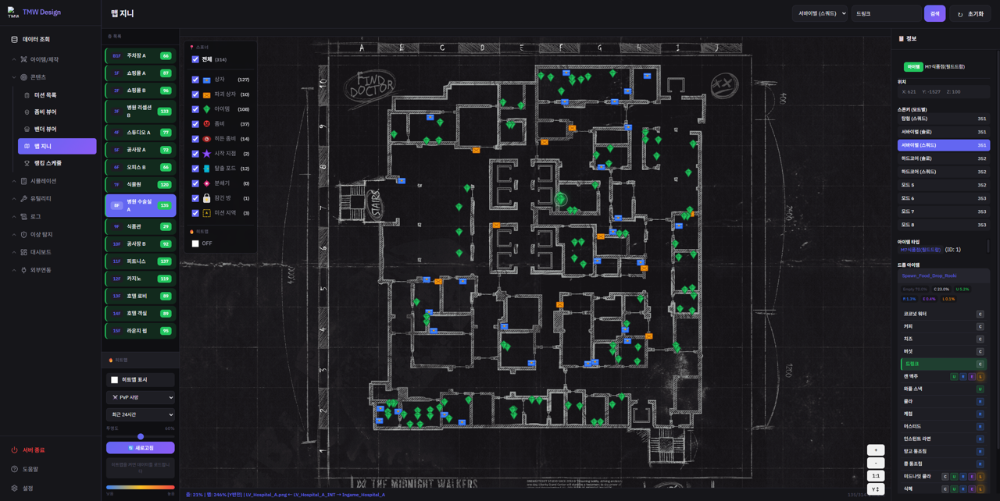

DEMO 01 · MapGenie
맵 위에 스폰 데이터를 시각화하는 도구
레벨 맵 이미지 위에 아이템/몬스터/기믹 스폰 위치를 겹쳐 보여주는 도구입니다. 검색 버그 수정 → 검색 캐싱 → 타입별 필터 오버레이 → SVG 아이콘 도입 → Enum 연동 한글 표시 → 드롭테이블 연동 순으로, 여러 세션에 걸쳐 점진적으로 다듬었습니다. 상자·아이템 스포너를 클릭하면 등급별 드롭 확률과 드롭 아이템 목록이 표시되고, 아이템 이름으로 검색하면 해당 아이템을 드롭하는 오브젝트만 지도에 필터링되어 표시됩니다. 맵 이미지는 실제 사용 중인 레벨 디자인 블루프린트이며, 스폰 위치/드롭 데이터는 데모용으로 가상 재구성했습니다.
드래그로 이동 · 휠로 확대/축소
📸 실사용 예시

사내에서 실제로 사용 중인 맵지니 화면. "드링크"로 검색해 병원 수술실 맵 위에 드랍 포인트만 필터링해 보여주는 모습입니다.